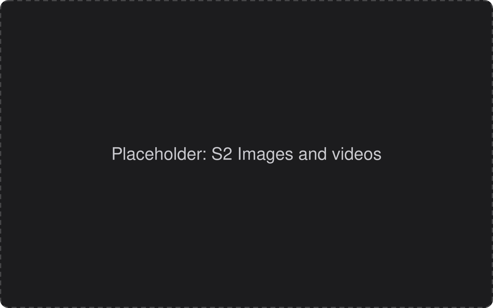
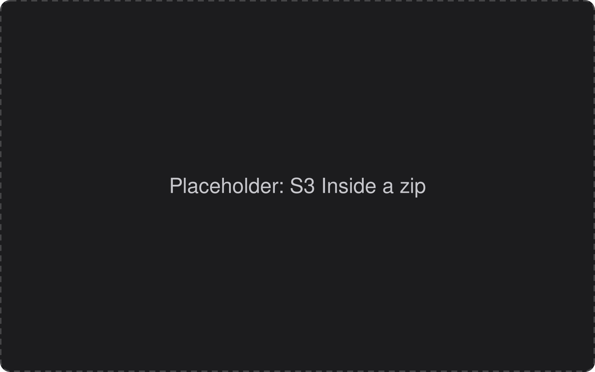
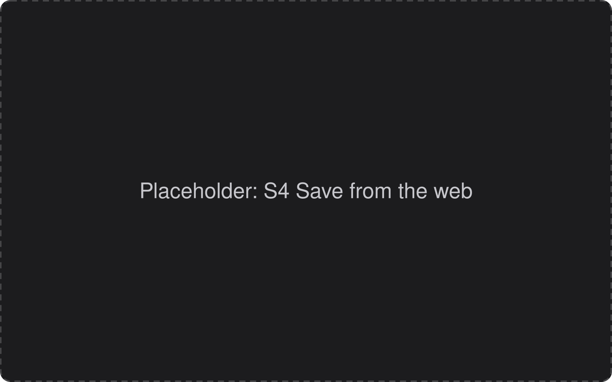
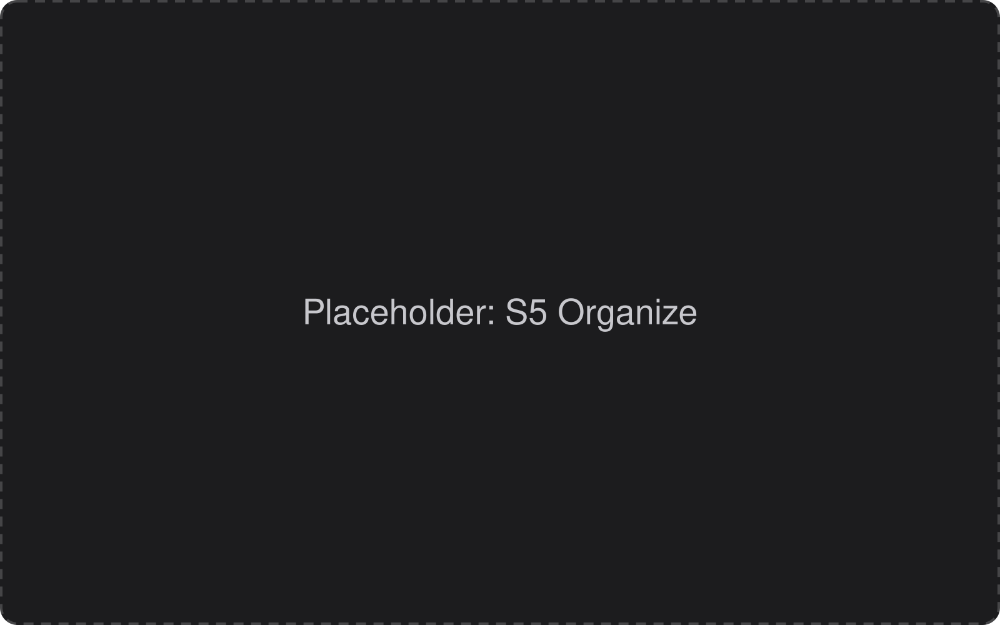
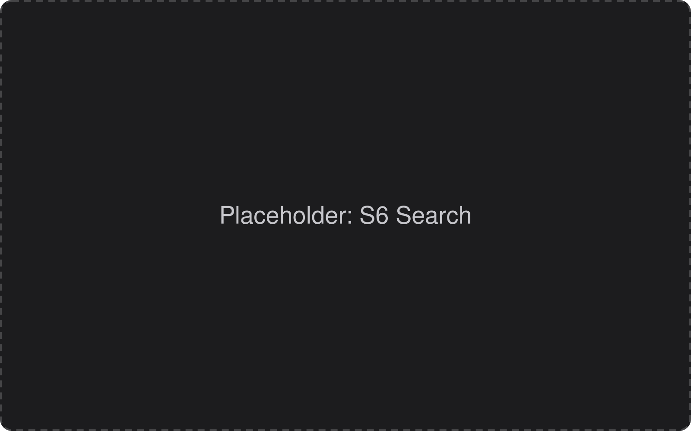
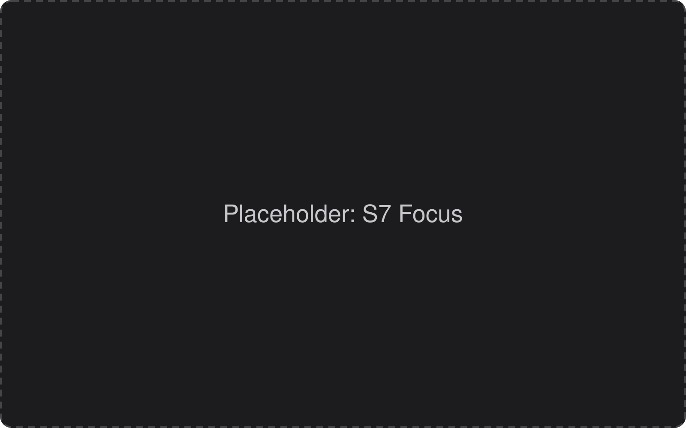
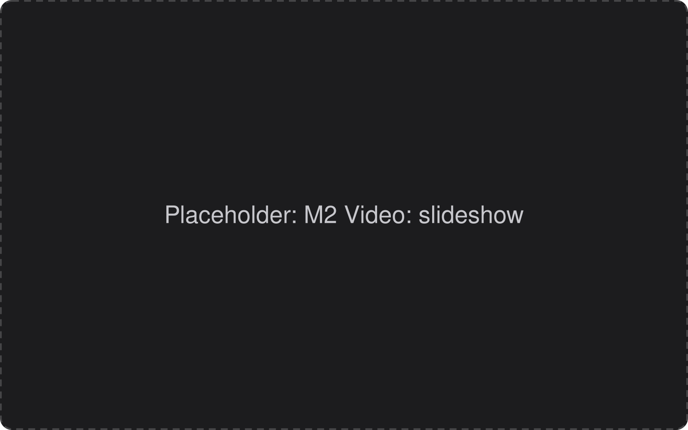
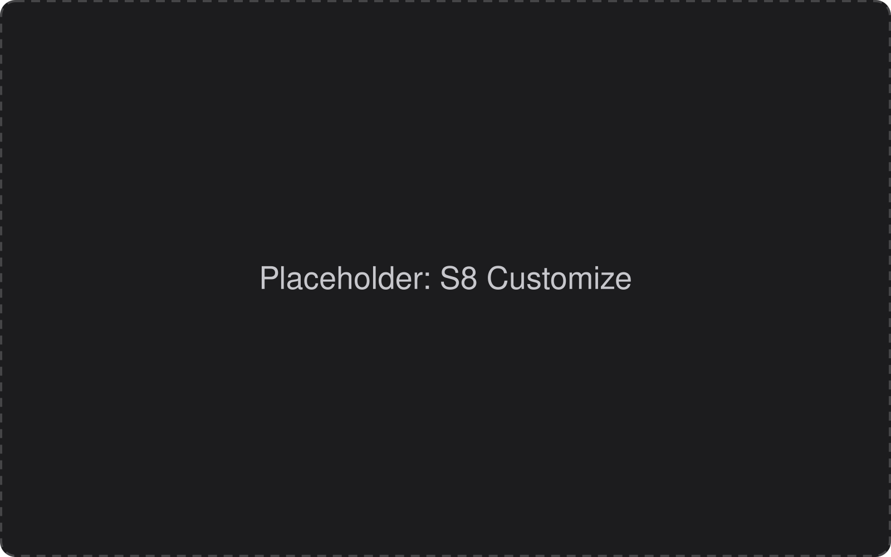

Folzio
Your folders are your library.
Browse, preview, and organize images and videos right where they are. Nothing to import.
Three panes. One window.
Navigate.
Move through the folder tree and keep the places you visit most in Favorites.
Scan.
Switch between thumbnails and a list with ⌘1 and ⌘2.
Preview.
See the selected item at once, large and clear.
Images and videos. Together.
Photos, animated GIFs, WebP images, and videos share one list. Videos can autoplay and loop. Press Space for Quick Look.

Open zip files. Without unzipping.
Walk the folders inside a zip and preview its images and videos. Japanese file names are shown by detecting their encoding, and videos play straight from the archive.

Save from the web. Just drag.
Drag an image from Safari or Chrome onto a folder. Or choose Copy Image and press ⌘V. Photos and videos from the Photos app work too.

Organize as you browse.
Copy, move, rename, and trash with the shortcuts and drag and drop you already know. Move items to and from Finder, or move several folders at once.

Find it as you type.
Filter the list you are viewing right from the toolbar. Search subfolders with ⌥⌘F, and see where each result lives.

Focus on what you see.
Pinch to zoom, show only the preview, or go full screen. Start a slideshow with crossfade, slide, or zoom transitions.


Make it yours.
Reassign menu shortcuts, rearrange the toolbar, and choose the columns you need. Keep the shortcut reference open in its own window.

Your files stay on your Mac.
The Folzio app works entirely on your Mac, without network communication. No accounts. No uploads.
Get Folzio.
Requires macOS 15 or later on a Mac with Apple silicon. Intel-based Macs are not supported.
Download the latest releaseDownload
Folzio-vX.Y.Z-macos-arm64.zipfrom GitHub Releases.Unzip it and move Folzio to your Applications folder.
Open Folzio. If macOS blocks it, choose Open Anyway in System Settings → Privacy & Security. Learn more ›